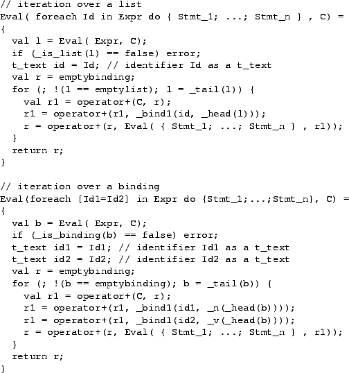

The language includes expressions for iterating over both lists and bindings. There is also a _map primitive defined on lists (Section A.3.4.4) and bindings (Section A.3.4.5). _map is more efficient but less general than the language's Iterate construct.
<
Iterate ::= foreach Control in Expr do IterBody
Control ::= Id | `[' Id = Id `]'
IterBody ::= Stmt | `{' Stmt+; `}'
The two Control forms are used to iterate over lists and bindings, respectively.
<
// iteration with single-statement body
Eval( foreach Control in Expr do Stmt , C) =
Eval( foreach Control in Expr do { Stmt } , C)
The semantics of a loop are to conceptually unroll the loop n times, where n is the length of the list or binding being iterated over. The evaluation rules for iterating over lists and bindings are shown in Table A.6. Note that the iteration variables (that is, Id, Id1, and Id2 in the Table) are not bound in the binding that results from evaluating the foreach statement. However, any assignments made in the loop body are included in the result binding.
|  |
Iteration statements are typically used to walk over or collect parts of a list or binding. For example, Table A.7 presents functions for reversing a list and for counting the number of leaves in a binding.